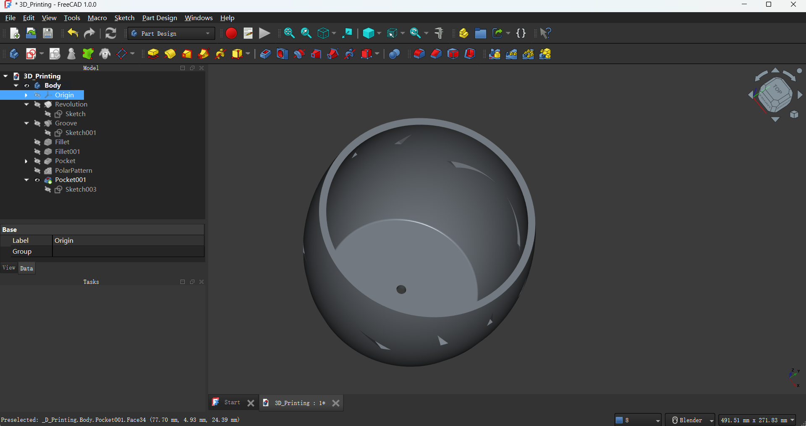
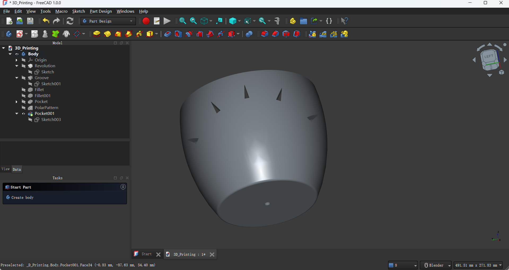
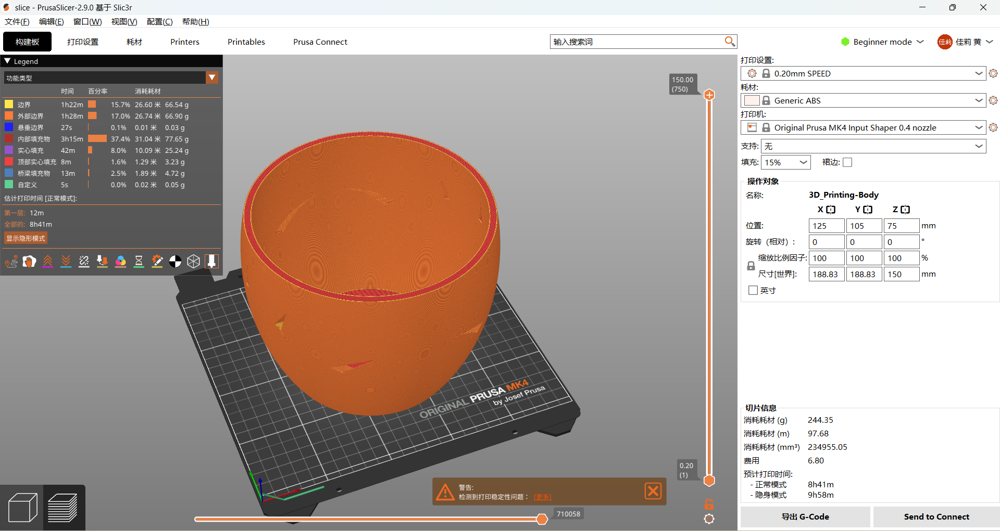

Additive Manufacturing and 3D Printing
3D printing is the same thing as additive manufacturing, which is a technology that gradually builds three-dimensional objects by layering materials based on a CAD model (Computer-Aided Design model) or a digital 3D model. Unlike traditional subtractive manufacturing (such as cutting or milling), 3D printing forms the final object by adding material layer by layer.
FDM/FFF 3D printing
FDM (Fused Deposition Modeling): This technology works by heating and extruding plastic filament (such as PLA, ABS, PETG, etc.), and depositing it layer by layer onto the print bed to gradually build up a three-dimensional object. FDM technology is very common, especially in desktop 3D printers.
FFF (Fused Filament Fabrication): Similar to FDM, FFF is also a technology that uses molten material to print layer by layer. Although the principles of FDM and FFF are the same, FDM is a trademark registered by Stratasys, while FFF is commonly used in open-source and DIY 3D printers.
Material Extrusion is a major category of additive manufacturing, and both FDM and FFF fall under this category. They achieve the printing process by extruding molten material.
3D Model
I sketch both inside and outside of the half of the pot and use Revolution to make it a full pot shape.
I create sketches to model a triangle and circle, then I use Pocket to dig the hole upon the flower pot model to ensure this model can not be easily made with any other digital fabrication process such as laser cutting or CNC milling. And I use PolarPattern to let the hole dig around the pot as a decoration.
 PrusaSlicer
I export the model as step format. Then I download a software named PrusaSlicer and do the Configuration Sources, like choose the deposition thick and 3D printing machine we are going to use. Finally, I slice it.
This is the freeCAD file of the project that I mentioned.